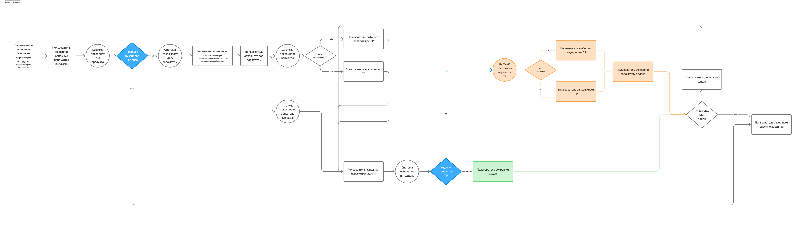
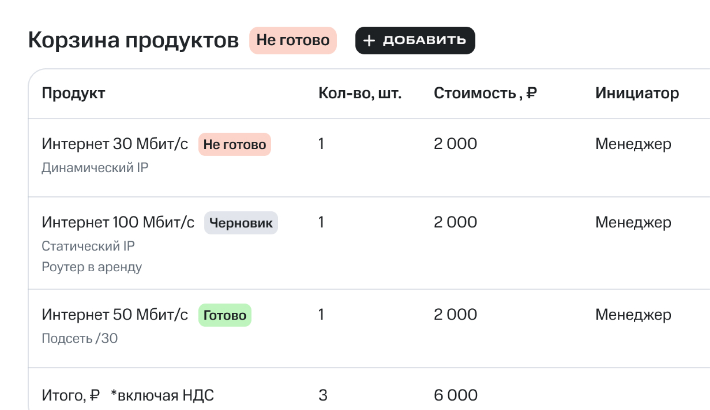
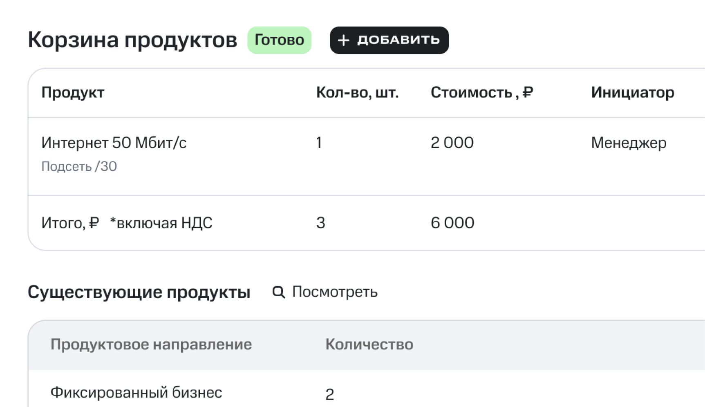
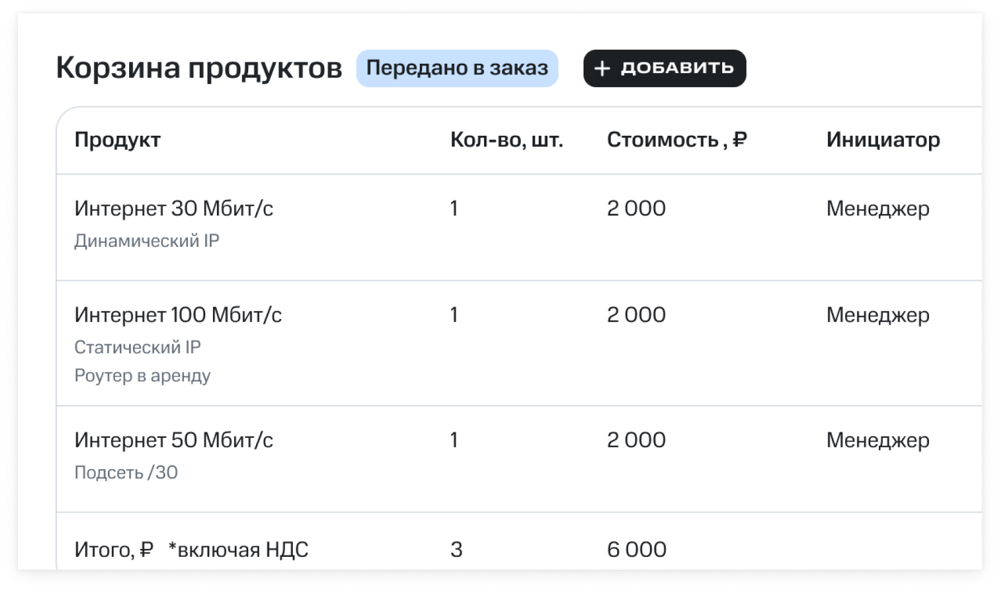

AoS: Между требованиями и интерфейсом
Сложная корпоративная система, где интерфейс постоянно находится между требованиями, архитектурными ограничениями и реальной логикой работы пользователей.
Моя роль
В рамках AoS отвечаю за исследование пользовательских сценариев, проработку продуктовой логики, проектирование интерфейсов и развитие общих паттернов продукта. Работаю на стыке пользователей, аналитиков, разработки и ограничений low-code платформы ELMA.
Контекст
Когда я пришла в проект, дизайнер подключался уже после появления требований.
Процесс выглядел примерно так:
Требования → Дизайн → Разработка → Обучение пользователей
На практике это означало, что многие проблемы обнаруживались слишком поздно. Уже после проектирования становилось понятно, что в требованиях есть противоречия, не учтены важные сценарии или отсутствуют детали, без которых решение не работает так, как ожидалось.
При этом исследования пользователей практически не проводились, а обратная связь чаще собиралась уже после реализации функциональности. Пользователей подключали в основном на этапе обучения, когда изменить что-то было дорого и сложно.
С чего пришлось начать
Довольно быстро стало понятно, что проблема не в отдельных экранах. Чтобы вообще начать системно развивать продукт, сначала пришлось создать базу для работы с интерфейсами, так как никакого UI-кита не существовало. Мне пришлось собирать практически с нуля, причём от обратного: через анализ уже реализованных компонентов, экранов и ограничений low-code платформы.
Постепенно набор разрозненных интерфейсов начал превращаться в систему. Появились повторно используемые компоненты, единые паттерны и возможность проектировать не отдельные экраны, а пользовательские сценарии целиком.
Но довольно быстро стало понятно, что одного UI-кита и запуска дизайн-процесса недостаточно. Основная проблема находилась раньше — на этапе формирования решений.
Исследования как инструмент проверки решений
Одним из первых изменений стало регулярное общение с пользователями. За последние несколько месяцев у нас было больше тридцати интервью и тестирований. И почти всегда самые полезные из них заканчиваются одинаково. Я закрываю ноутбук и иду выдыхать в парк, потоу что стало очевидно - начинаем сначала.
Ещё час назад решение выглядело логичным и собранным, а потом в разговоре с пользователем выясняется, что он живёт вообще в другой логике. Он делает по-другому. Быстрее. Проще. Иногда вообще в обход того, что мы считали основным сценарием.
Многие решения, которые внутри команды выглядели очевидными, после интервью приходилось пересматривать. Иногда менялся экран, иногда сценарий целиком, а иногда становилось понятно, что проблема вообще не в интерфейсе.
Исследования постепенно перестали быть разовой активностью и стали частью процесса принятия решений.
Как изменился процесс работы
Со временем мне удалось пересмотреть сам подход к работе над задачами. Сейчас к тем задачам, где требуется проектирование интерфейсов, я подключаюсь уже на этапе формирования требований. Это позволяет раньше находить узкие места, задавать вопросы, которые могут не возникнуть у аналитиков или методологов, и вовремя предлагать несколько вариантов решения.
Процесс постепенно изменился:
Было
Требования → Дизайн → Разработка → Обучение пользователей
Стало
Требования → Дизайн-проверка гипотез → Разработка
Это сократило количество возвратов к требованиям, уменьшило объём переделок и позволило проверять спорные решения до того, как на них будут потрачены ресурсы разработки.
По сути дизайн перестал быть этапом визуализации и стал инструментом проверки решений.
Дизайн редко начинается после требований — он начинается прямо внутри них.
Пример 1. Параметры продуктов
Для каждого продукта связи существует набор параметров, влияющих на подключение и дальнейшее исполнение заказа. С точки зрения архитектуры было логично строить единую модель параметров для всех продуктов. Это упрощало поддержку и делало систему более предсказуемой. Но во время обсуждений и тестирования стало понятно, что универсальность системы не всегда помогает пользователю. Часть настроек выглядела важной для системы, но не помогала человеку выполнить задачу.
В результате пришлось разделять системную и пользовательскую логику и искать баланс между архитектурной целостностью и удобством работы.

Пример 2. Статусная модель корзины
Одной из самых сложных задач стала работа со статусами.
В системе одновременно существовали статусы корзины и статусы отдельных продуктов внутри неё. С точки зрения архитектуры такая модель была корректной. Но для пользователя она выглядела перегруженной и не отвечала на главный вопрос:
Что происходит сейчас и нужно ли мне что-то делать?
Во время обсуждений с командой и проверки сценариев стало понятно, что пользователю не нужно видеть всю техническую сложность процесса. Он воспринимает заказ целиком и хочет понимать только то, что влияет на его дальнейшие действия. В результате статусная модель была пересмотрена. Техническая логика системы сохранилась, но в интерфейсе остались только состояния, которые помогают человеку принять решение и понять следующий шаг.
Было
КОРЗИНА
ПРОДУКТ
Стало
КОРЗИНА
ПРОДУКТЫ



Результат
За время работы мне удалось внедрить в процесс:
- регулярные пользовательские интервью;
- тестирование гипотез до разработки;
- системный подход к интерфейсам;
- единые паттерны проектирования;
- обсуждение решений через реальные пользовательские сценарии;
- раннюю проверку требований до передачи в разработку.
Это позволило раньше находить проблемы в требованиях, сокращать количество переделок и не тратить ресурсы разработки на заведомо слабые решения.
Главным результатом для меня стали не отдельные экраны и не статусная модель, а то, что дизайн стал частью процесса принятия продуктовых решений.
Использование AI
В работе над продуктом использую AI для ускорения исследований, подготовки презентационных материалов и автоматизации части дизайн-процессов.
Например, с помощью AI удалось собрать раздел обучения полностью на компонентах существующих дизайн-систем без создания новых сущностей и с минимальным объёмом ручных доработок.
Для анализа рынка CRM настроила AI-процесс, который автоматически собирает информацию о релизах конкурентов, структурирует её в едином формате и формирует материалы для дальнейшего анализа команды. Это позволило значительно сократить время на подготовку исследований и обзор рынка.